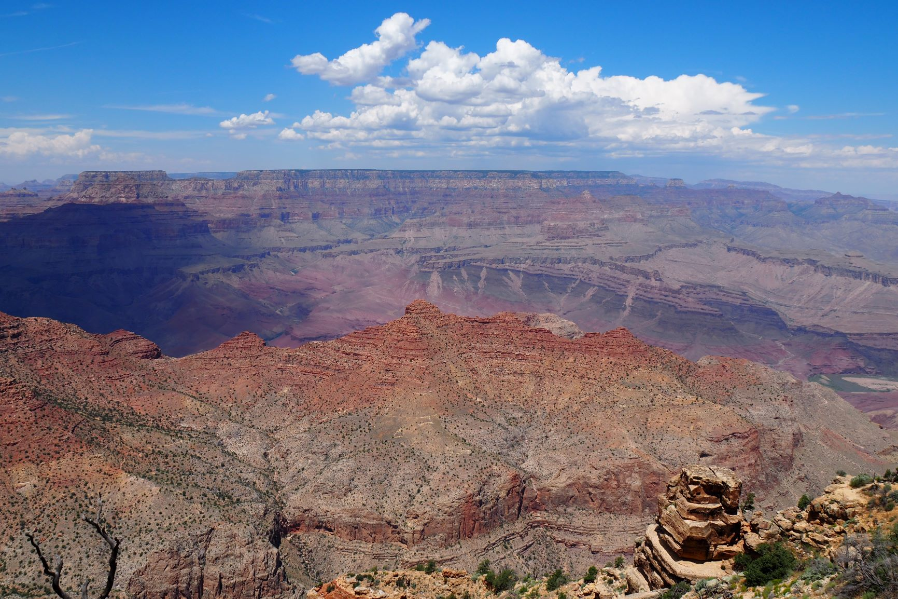
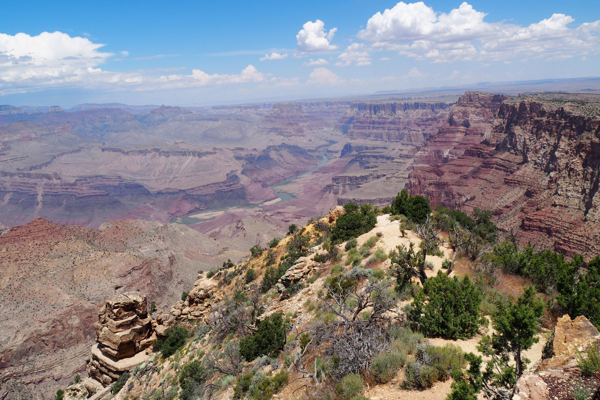
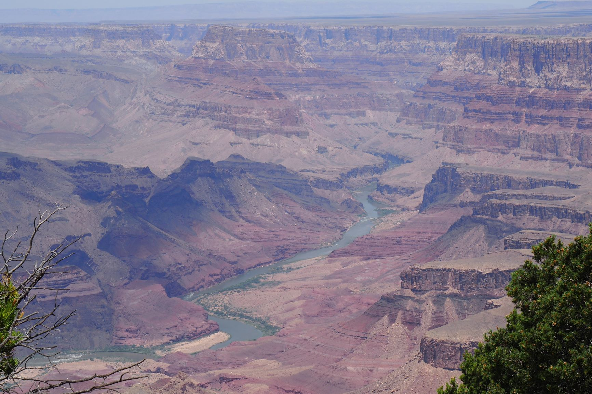

| Home | Yosemite National Park | Zion | Bryce Canyon | Monument Valley | Grand Canyon |
Het bekendste Nationale Park is waarschijnlijk wel de Grand Canyon. Deze canyon is een resultaat van een indrukwekkend staaltje natuurgeweld. De kloof is uitgesleten door een wilde en woeste rivier, de Colorado. Al miljoenen jaren heeft de Colorado rivier een scheur in de aardkost gemaakt van ongeveer 1600 meter diep en wel 350 kilometer lang. Op het breedste stuk liggen de randen bijna 30 kilometer uit elkaar!
De diepe ravijnen en de talrijke uitzichtpunten zijn indrukwekkend en drukbezocht. Ook zijn er vele wandelingen te maken. Een aanrader is om vroeg op te staan en de zon te zien opkomen.
Meer lezen.   